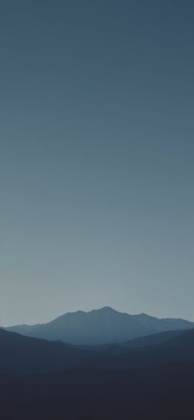
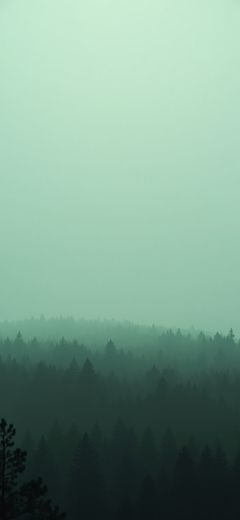

Supply
It tells you you are running out three weeks early.
Every logged dose draws the vial down. Stack counts what is left, works out the date you go dry, and puts a cost per dose beside it — so ordering is a decision you make on a Thursday, not an emergency you discover on a Monday.
In your system
A tick says you took it. It cannot say what is still in you.
Stack models what has not cleared — a relative curve drawn from each compound's half-life, so overlapping doses stop being something you hold in your head.
A model, not a measurement. It is an estimate from published half-lives, and the screen says so where you read it.
Rotation
You should not have to remember which side you used.
Stack does. It keeps the rotation honest, greys out anything still resting, and hands you the next site before you have opened the drawer.
A record of where you have already been — not a recommendation.
Backgrounds
The colour comes out of the photograph.
Pick a background and the app takes its accent from it — the hue measured off the image itself, then raised until it clears 4.5:1 on the darkest surface it will ever sit on. Bring your own photo and it goes through exactly the same function. Nothing is hand-picked, so nothing is ever fighting your wallpaper.


Four photographs, four accents, one function and no hand-tuning. The ratio under each one is the measured contrast, not a target we are aiming at.
The edges
It will not tell you what to take.
Anything that records what people take will eventually be asked to advise them. We decided where that line sits before we shipped, and we would rather you read it here than find it on the fourth screen.
- It will not recommend a compound. Not by suggestion, not by ranking, not by implication in a list of what other people take.
- It will not recommend a dose, or tell you to raise one, lower one, or hold.
- It will not read a lab result and pronounce on it. It puts your numbers next to published reference ranges and leaves the reading to you and a clinician.
- It does not measure anything. The level curve is a model built from published half-lives, labelled as an estimate every time it appears.
- It is not medical advice — not the app, not this site, not one word of the library. Talk to a clinician about anything you take.
Your data
What you take is the most sensitive list on your phone.
It is encrypted on the device. Cloud backup exists and is off until you switch it on. Sign-in takes an email and nothing else, so the account never learns a compound name. You can export the whole record on any plan — your own data is never behind the paywall — and if you delete the account it is gone permanently, not archived. No ads. We do not sell data and we do not train on it.
Compound library · free
Read the compound before you add it.
Plain-English pages for 112 compounds: what it is, how it works, half-life, storage, and what matters when you are tracking it. Summarised from public sources, cited, free, no account, and no opinion about whether you should be taking it.
Pricing
The logbook is free. The reading of it is not.
Everything you need to keep an honest record costs nothing and always will, with no cap on compounds. Plus is the interpretation layer on top of it.
Free
Every compound, every reminder, supply projection, injection rotation, streaks, weight trend, label scanning, and three questions a week for Sage.
Get the appPlus
The full in-system level screen, bloodwork ranges, the whole trend history, a doctor-ready report, unlimited Sage, and automatic encrypted backup. Monthly, yearly, or a one-time lifetime unlock.
See PlusNever a paywall on your own data. Export a full encrypted backup on any plan, including the free one.
Before you ask
Is it actually free?
Yes, and there is no compound limit. Tracking, reminders, supply projection, rotation, streaks and weight trends cost nothing. Plus adds the insight layer.
Do I need an account?
No. Everything on the phone works without one. An account is email-only and exists so a Plus purchase follows you to a new device — it never learns what you take.
What can I track?
Anything on a schedule: supplements, vitamins, prescriptions, peptides, GLP-1s and TRT — alongside habits, weight, lifts and bloodwork.
Can I use my own background?
Yes. Any photo you pick goes through the same function the shipped ones do, so the accent is derived from your image and still measured for contrast before it is used.
When does it launch?
Android first, iOS after. Leave an email and we will tell you the day it is live.